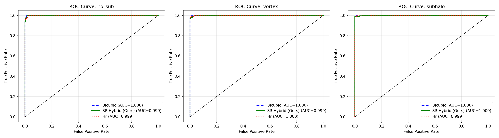
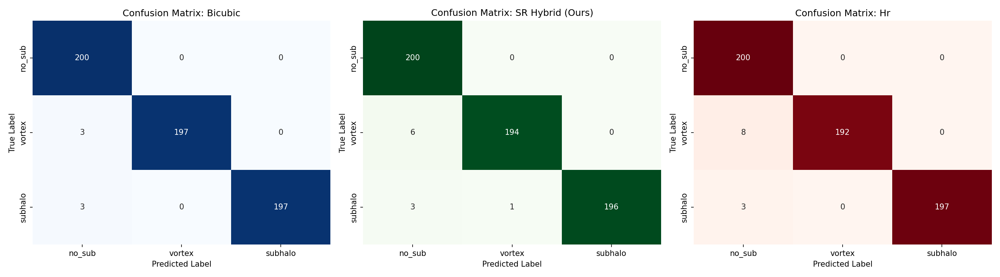
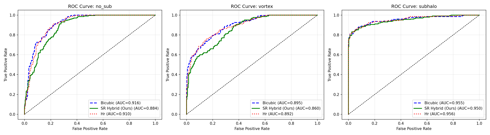
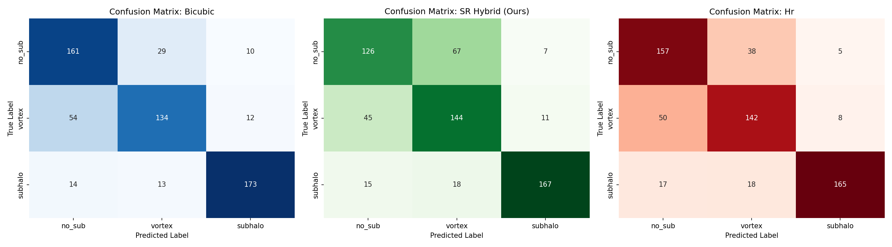

Physics-Informed Super-Resolution for Strong Lensing
Strong gravitational lensing provides a unique probe into dark matter substructure and the mass distribution of foreground lenses. However, observations from upcoming surveys like LSST (Rubin Observatory) and Euclid will be limited by resolution and point spread function (PSF) effects.
Traditional Super-Resolution (SR) relies on High-Resolution (HR) ground truth, which does not exist for real astronomical observations. We only have Low-Resolution (LR) images from telescopes. Therefore, relying solely on supervised learning on simulations is insufficient due to the domain gap.
Our project implements a dual-strategy to bridge the gap between simulations and real survey data:
Enforcing that the Super-Resolved image, when degraded by the known telescope PSF and downsampling, matches the observed LR image ($L_{phy}$).
Bridging the gap between synthetic training data and real observation noise signatures to enable zero-shot transfer.
We quantified the physical utility of Super-Resolution using domain-specific metrics beyond standard vision scores.
| Method | Arc Sharpness | Ring Contrast |
|---|---|---|
| Bicubic Interpolation | 221.96 ± 60.1 | 5.08 ± 3.06 |
| SR Baseline (Supervised) | 268.50 ± 79.5 | 4.97 ± 2.86 |
| SR Hybrid (Physics-Informed) | 267.41 ± 79.3 | 5.39 ± 3.27 |
| HR Ground Truth | 266.39 ± 77.8 | 5.14 ± 3.06 |
*Wilcoxon Signed-Rank Test: $p = 1.86 \times 10^{-9}$ for arc sharpness statistical significance.
SR-enhanced images are used to feed downstream classifiers distinguishing between no_sub, vortex, and subhalo dark matter models.

Baseline classification performance on target samples.

Multi-class distribution and false positive rates.

Performance under extreme PSF blur and low SNR.

Misclassification patterns for faint substructures.